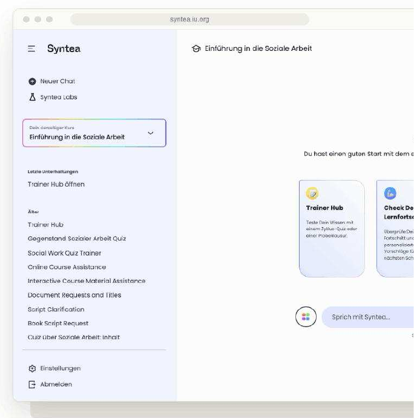
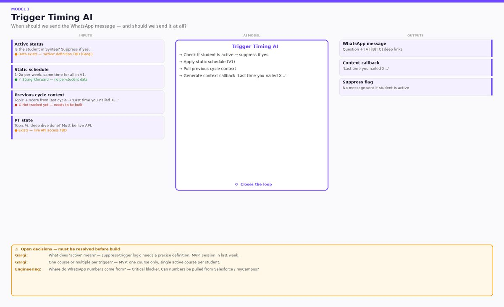

UX Lead & AI Product Design Strategist · Munich
Helping product teams solve the right problem — and decide faster.
I lead UX for digital products and build the practice behind them — from the first design system to a team that runs its own research.
What I bring to a product team
Selected work
All work →
Syntea: from exam-week tool to daily companion
Making an AI study companion part of the first two weeks, not the last two days.

Building a study habit
A habit loop for students, drawn as the four decisions the system makes.

WorkShift
A learning companion that turns a leadership course into something to try at work this week.

myCampus 2.0
Consolidating three grown systems into one platform without losing the students on the way.
How I design for AI
The thinking behind it ↗No decision → no impact → no value.
Tie it to a decision that matters
If the AI’s answer doesn’t change a decision or a number the team cares about, it has no value.
Check the data first
Are there real past examples the AI can learn from? If not, that’s the first job, not the model.
Decide which mistakes you can live with
A false alarm and a missed case cost different things. Agree on that before anything gets built.
What people say
More on LinkedIn ↗“Nuria represents the future of the UX profession in the age of AI. […] Any team looking for a UX leader to deliver the next level of AI product experience for their organization would be incredibly lucky to have her.”
Greg Nudelman, author of UX for AI (Wiley), my mentor“Few people embody strategic clarity, deep empathy, and creative leadership as seamlessly as Núria does.”
Lilly, UX Designer & Researcher“Núria brings a strong sense of curiosity, openness, and a true growth mindset to everything she does. Her drive to keep evolving is infectious and makes her not only a great colleague to work with — but one you genuinely grow with.”
Maike, Product Owner“She was an incredible mentor who laid the foundation for my growth in UX/UI, web design, and design systems. Thanks to her deep knowledge of design strategy and balancing user and business needs with technical constraints, she also helped me gain confidence in complex decision-making.”
Josephine, UX/UI Designer